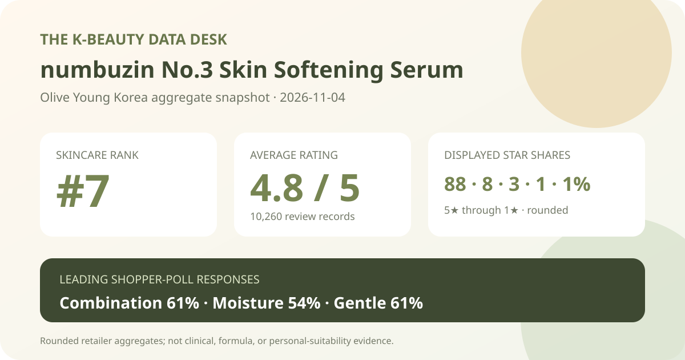
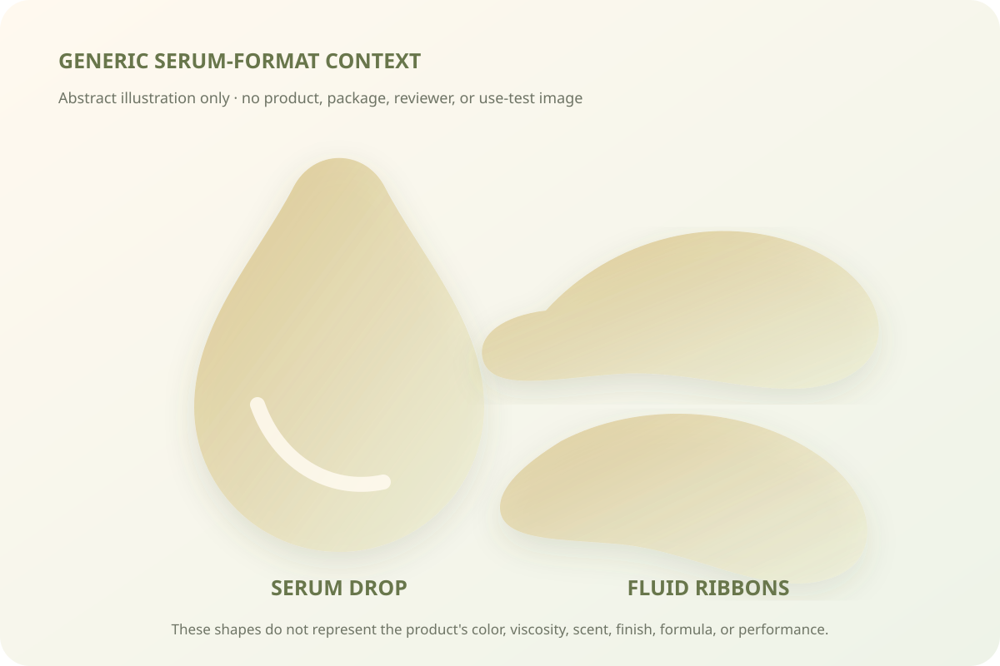

Data captured November 4, 2026. This analysis uses only the retailer's displayed product title, ranking position, aggregate rating, star distribution, and shopper polls. It does not copy or translate individual review text, reviewer names, or photos, and it makes no claim of firsthand use.

The short version: numbuzin No.3 Skin Softening Serum appeared at number 7 in the captured skincare sales ranking. Its product header and detailed review view agreed on 4.8 out of 5 from 10,260 records. Five-star selections made up 88% of the displayed distribution; combination skin and moisture were the leading poll responses, while 61% selected the gentle response. These are retail signals, not proof of smoother skin, pore change, hydration, tolerance, or clinical performance.
The displayed average was 4.8 stars. Olive Young showed 10,260 review records in the product header, and the official detailed review view repeated the same score and total. That agreement is an important quality check because it reduces the risk of pairing a score from one page state with a record count from another.
The detailed view displayed these rounded star shares:
The rows total 101% because the retailer rounds each share to a whole number. The useful reading is not that the display contains a mathematical error; it is that high ratings dominate this retail pool, with 88% displayed at five stars and another 8% at four stars. The one-point excess must not be subtracted from a chosen row, because the underlying unrounded values are not exposed.
A large record count makes the average more stable as a description of this retailer listing than a tiny sample would be. It still combines different purchase dates, routines, climates, sensitivities, application amounts, and package configurations. An average cannot explain why people selected their scores or prove that the formula caused a specific result.
The skin-type panel displayed 61% combination, 27% dry, and 12% oily. Those rounded shares total 100%. Combination respondents formed the clear majority of the displayed poll, while dry respondents represented a little over one quarter and oily respondents a smaller group.
This is sample representation, not a recommendation. The interface did not expose the panel denominator, whether every reviewer answered, how respondents classified themselves, or the routines and climates in which the serum was used. A 61% combination share does not establish that the product is best for combination skin, and a 12% oily share does not show that oily skin should avoid it.
The concern panel showed 54% moisture, 23% soothing, and 22% wrinkle or brightening. The rounded rows total 99%. Moisture was the leading label, but it is a shopper response rather than a hydration measurement. No corneometer result, transepidermal-water-loss reading, comparator, defined dose, or time point was captured.
The soothing response cannot demonstrate reduced inflammation or treatment of redness. The wrinkle or brightening response does not measure wrinkle depth, elasticity, pigmentation, or change over time. These labels show how respondents categorized their impressions within the retailer's survey, not independently verified outcomes.
The irritation panel displayed 61% gentle, 37% ordinary, and 2% felt irritation. A majority selected the favorable label, yet more than one third selected ordinary and a nonzero group selected felt irritation. Reading all three rows is more useful than reducing the panel to a blanket “gentle” claim.
The source did not provide a patch-test protocol, dermatologist assessment, allergy screening, or severity and duration data. The poll cannot predict an individual's response. People with known allergies, active skin conditions, a damaged barrier, or a history of reactions should inspect the current regional ingredient list and seek appropriate professional guidance rather than rely on the aggregate.

The retailer classifies this item as a serum. That identifies the format category, but it does not verify color, scent, viscosity, slip, absorption speed, residue, finish, pilling, or compatibility with sunscreen and makeup. I did not open, dispense, or apply the product.
The local illustration above deliberately avoids depicting the actual product or package. It provides only a generic visual cue for a fluid serum format. Real sensory behavior depends on the formula, amount, underlying layers, application method, humidity, temperature, and the rest of the routine.
The captured official review view exposed the rating, star rows, and three shopper-poll panels, but it did not display a usable anonymous sentiment or topic-summary panel. For that reason, this analysis does not infer themes from individual reviews and does not convert visible review sentences into aggregate evidence.
That omission is intentional. A few visible reviews would not represent all 10,260 records, and reproducing or translating them would conflict with this site's privacy and scope rules. The article therefore stops at the official aggregate interfaces that could be checked consistently.
The number and skin-softening name identify the product family. The Korean listing also uses pore-texture positioning. None of those naming elements proves a measured change in pore size, surface roughness, firmness, pigmentation, or barrier function. The retail rating and polls are not clinical endpoints.
This capture also does not verify the complete current formula or the concentration of any ingredient. Ingredient expectations should not be reverse-engineered from the product name, campaign language, or shopper responses. Buyers who care about specific ingredients should check the current package and regional disclosure.
Rank 7 describes one moment in Olive Young Korea's skincare sales list. It is not a quality rank and does not mean the serum is objectively the seventh-best skincare product. Promotion placement, price, stock, advertising, gifts, and recent demand can all affect the order.
The captured listing described a 30 ml double plan with one sheet-mask extra, displayed a ₩42,000 reference price and ₩24,900 promotional price, and labeled the item as a November Olive Young pick. These details are temporary. The review pool may include related package sizes or configurations, so the aggregate should not be treated as satisfaction with only the visible double plan. Confirm volume, gifts, stock, current formula, seller, coupon conditions, return terms, and final checkout total.
numbuzin No.3 Skin Softening Serum was the first valid unpublished product after six higher-ranked existing products or normalized product families were skipped. The listing passed the consistency check: ranking and detail titles agreed, and both review surfaces showed 4.8 stars from 10,260 records.
The displayed distribution is strongly positive, with 88% five-star and 8% four-star. Combination respondents led the skin-type poll at 61%; moisture led the concern poll at 54%; and 61% selected the gentle response. The lower rows also matter: 37% selected ordinary on irritation and 2% selected felt irritation.
The responsible conclusion stops there. The data supports describing a well-rated retail record and the composition of the retailer's displayed polls. It does not prove softening, pore change, hydration, soothing, brightening, wrinkle change, safety, or fit. Verify the exact offer and current label, and treat personal compatibility as a separate decision.
Method note: Numbers are transcribed from the retailer's displayed aggregate interfaces and retained with their original whole-number rounding. No individual review was used as evidence in this article.
← All reviews · Rankings · Skin-poll representation · About & methodology
Published by The K-Beauty Data Desk · Aggregate data captured 2026-11-04. No product or user photograph is reproduced, and the product was not tested for this analysis. Check the dated source listing.